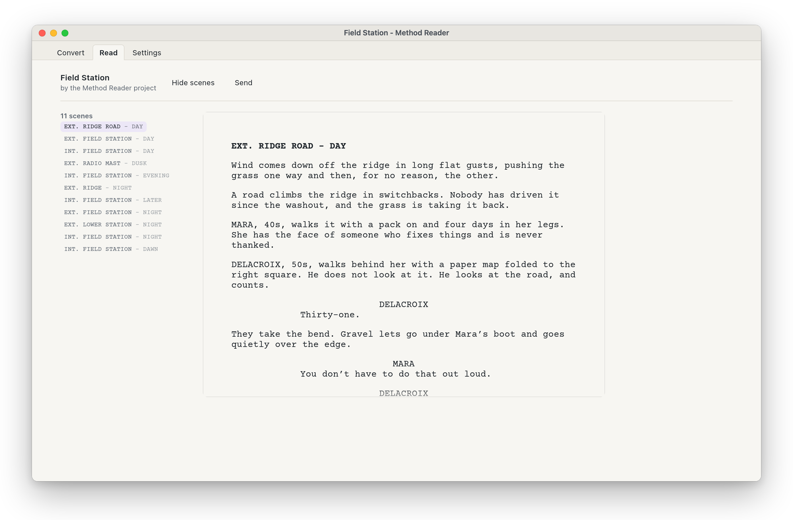
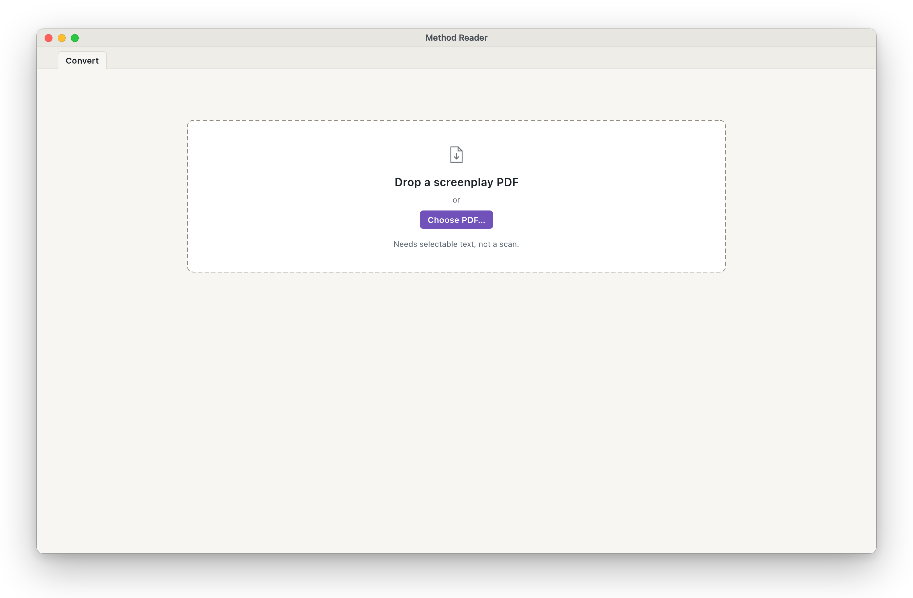
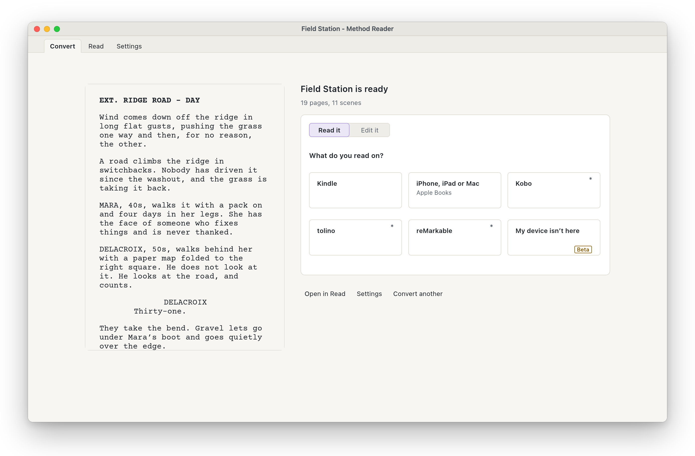
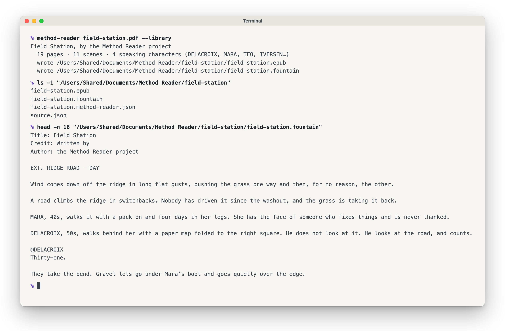

Reading scripts on an e‑reader shouldn't be difficult. Method Reader makes it easy.
Drag a screenplay PDF onto the window and get an e-book that reflows at any text size, with the script's shape intact: scene headings, cues and dialogue where they belong. Then send it to the reader you already own. The same PDF also comes back as a script you can edit, as Fountain or .fdx.
Screepub is now Method Reader. Same app, new name: it has joined the Method Production Suite. Updating from Screepub keeps your settings and your library.

Reading PDFs on an e‑reader sucks.
Read scripts natively.Adjustable to your preferences.
Set it how you read.
Every setting here is live. Change one and the script reflows exactly the way it will on your reader.
Drag and drop.
It's that simple. Fine tune anything you like afterwards, and see exactly what the device gets.


Built for people who read scripts.
WRITERS
Reading your own draft on something that isn't a laptop. And when all you have is the PDF, getting the script back to edit, as Fountain or .fdx (beta).
ACTORS
Working from sides, at a text size you can actually read.
EVERYONE ELSE
Anyone handed a production draft who would rather not read it hunched over a phone.
Verified on a Kindle: over USB on the models that still mount as a drive, and by email on any of them. Newer Kindles speak MTP instead and never appear in Finder, so those go by email. Over USB a Kindle gets an AZW3 that Method Reader makes itself, with nothing else installed (beta, not yet tried on a Kindle); KFX looks better and is optional, needing Calibre and two other free tools; and email needs no tools at all and gets Amazon's own best layout. Kobo, tolino and reMarkable are written and code-tested, but nobody has plugged one in. The full device table is on GitHub.
Also marked beta: the AZW3 Method Reader makes itself (beta); pictures from the script carried into the book, with a designed title card as its cover (beta); the FDX (beta); eject on Windows and Linux (beta on Windows and Linux); and My device isn't here, with It worked and It did not work (beta). A feature marked (beta) works in our tests, but has not been tried widely on real devices or apps yet: tell us how it goes.
Yours to keep.
FREE, FOR GOOD
Open source under MIT or Apache 2.0, with the AZW3 writer under GPL v3. No account, no subscription.
NOTHING UPLOADED
Converting happens on your computer and works offline. Your script never leaves your machine.
FILES THAT LAST
An EPUB 3 book, and the script as plain Fountain text or as .fdx. Every word is the PDF's own: nothing writes your script for you.

Every download.
On a Mac, download Method-Reader-macOS.dmg:
signed and notarized by Apple, for Macs with Apple silicon,
macOS 13 or later. It updates itself. The buttons above are that
file, and the same app runs on Windows and Linux.
The one thing it does online on its own is check for updates,
and you can turn that off. On a Mac, two minutes after the
window opens and every six hours after that, it fetches one small file,
latest.json, from Method Reader’s releases on GitHub.
The request carries the app’s name and version and nothing else:
no account, no identifier, nothing about your scripts. GitHub sees your
internet address, as any website does. A new version downloads, its
signature is checked, and nothing is replaced until you restart. Turn it
off with Help > Check for Updates Automatically.
On Windows and Linux the app does not check.
On an Intel Mac, version 0.9.0 is the last version.
It keeps working, but it will not be offered updates. To install it,
find 0.9.0 on the
releases page and download its Screepub-macOS.dmg (the app's earlier
name).
| Computer | File | Status |
|---|---|---|
| Mac | Method-Reader-macOS.dmg |
Verified by a person, on an Apple silicon Mac. Reports welcome. |
| Linux: Debian, Ubuntu | Method-Reader-linux-amd64.deb |
Built and checked automatically. Never installed by a person yet: reports welcome. |
| Linux: Fedora, openSUSE | Method-Reader-linux-x86_64.rpm |
Built and checked automatically. Never installed by a person yet: reports welcome. |
| Linux: any other, 64-bit | Method-Reader-linux-x86_64.AppImage |
Built and checked automatically. Never run by a person yet: reports welcome. |
| Windows, 64-bit | Method-Reader-windows-x64-setup.exe |
Built and checked automatically. Never installed by a person yet: reports welcome. |
Command line, any platform: see the developer page. Who has checked each file, and how far: the verification ledger.
Windows will warn you. Method Reader for Windows is unsigned: it carries no code-signing certificate, so SmartScreen shows a “publisher unknown” screen the first time you run it. Choose More info, then Run anyway. Certificates cost money this project does not spend yet; this note exists so the warning is expected rather than alarming. The Windows installer also fetches Microsoft’s WebView2 runtime once if your machine has none. Converting never touches the network, on any platform.
Help build it.
IF YOU READ OR MAKE FILMS
No code needed: start with an issue labelled help wanted: film knowledge. Own a Kobo, a tolino or a reMarkable? A five-minute report, either way, is the most useful thing you can send. So is a script whose layout comes out wrong: describe it in an issue with an invented page that shows the problem, never a real script.
IF YOU WRITE CODE
Start with an issue labelled good first issue. One command checks everything, and CONTRIBUTING covers the rest.